Hi!
–
This ‘minimal flipbook’ template has a couple of classic examples to get you building your first flipbooks!
–
flipbooks are code-movies. The frames of the movies are slides. Here we use the R package {xaringan} to create a remark.js slideshow.
–
Slide breaks are indicated with --- (be careful trailing white space is not allowed)
–
flipbookr’s chunk_reveal() disassembles a single code chunk and creates the “build” of multiple partial-code chunks on different slides (the — is automatically generated for you too).
–
We use chunk_reveal() it ‘inline’, not in a code chunk.
–
Let’s start!
| class: inverse, middle, center |
| # First up: classic flipbook, using defaults to walk through code pipeline |
count: false
.panel1-my_cars-auto[
cars #<<]
.panel2-my_cars-auto[
speed dist
1 4 2
2 4 10
3 7 4
4 7 22
5 8 16
6 9 10
7 10 18
8 10 26
9 10 34
10 11 17
11 11 28
12 12 14
13 12 20
14 12 24
15 12 28
16 13 26
17 13 34
18 13 34
19 13 46
20 14 26
21 14 36
22 14 60
23 14 80
24 15 20
25 15 26
26 15 54
27 16 32
28 16 40
29 17 32
30 17 40
31 17 50
32 18 42
33 18 56
34 18 76
35 18 84
36 19 36
37 19 46
38 19 68
39 20 32
40 20 48
41 20 52
42 20 56
43 20 64
44 22 66
45 23 54
46 24 70
47 24 92
48 24 93
49 24 120
50 25 85]
| count: false |
| .panel1-my_cars-auto[ |
r cars %>% filter(speed > 4) #<<
] |
| .panel2-my_cars-auto[ |
speed dist 1 7 4 2 7 22 3 8 16 4 9 10 5 10 18 6 10 26 7 10 34 8 11 17 9 11 28 10 12 14 11 12 20 12 12 24 13 12 28 14 13 26 15 13 34 16 13 34 17 13 46 18 14 26 19 14 36 20 14 60 21 14 80 22 15 20 23 15 26 24 15 54 25 16 32 26 16 40 27 17 32 28 17 40 29 17 50 30 18 42 31 18 56 32 18 76 33 18 84 34 19 36 35 19 46 36 19 68 37 20 32 38 20 48 39 20 52 40 20 56 41 20 64 42 22 66 43 23 54 44 24 70 45 24 92 46 24 93 47 24 120 48 25 85
] |
count: false
.panel1-my_cars-auto[
cars %>%
filter(speed > 4) %>%
ggplot() #<<]
.panel2-my_cars-auto[ ]
| count: false |
| .panel1-my_cars-auto[ |
r cars %>% filter(speed > 4) %>% ggplot() + aes(x = speed) #<<
] |
| .panel2-my_cars-auto[ 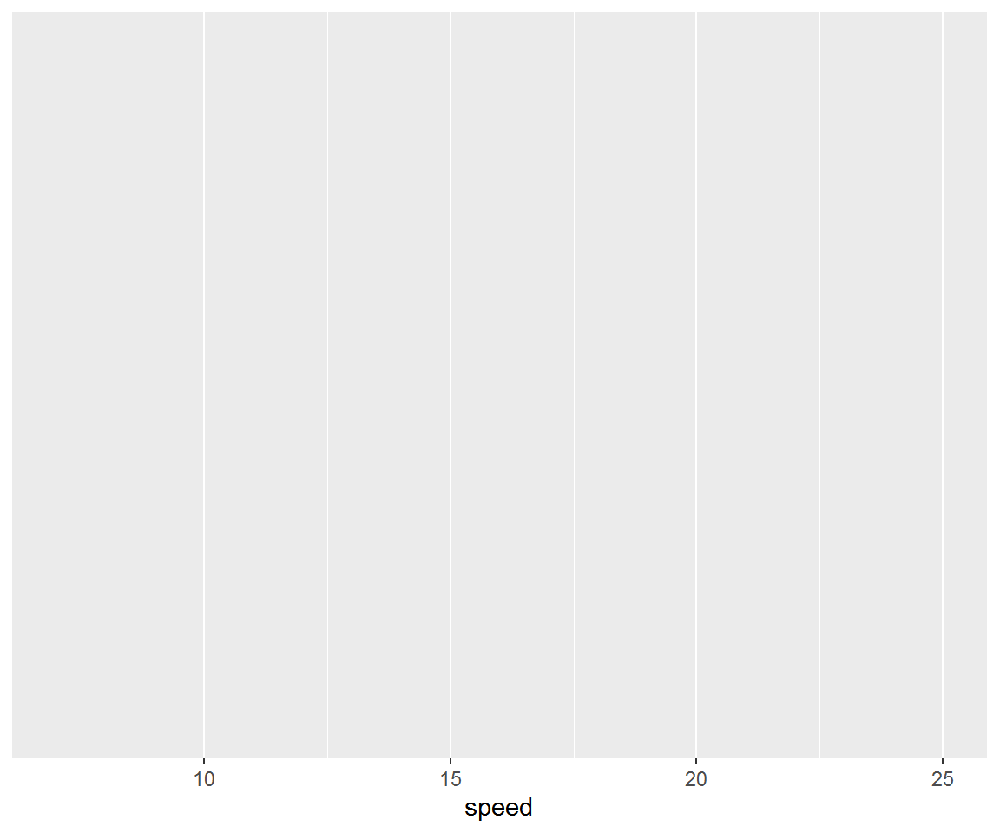] |
count: false
.panel1-my_cars-auto[
cars %>%
filter(speed > 4) %>%
ggplot() +
aes(x = speed) +
aes(y = dist) #<<]
.panel2-my_cars-auto[ 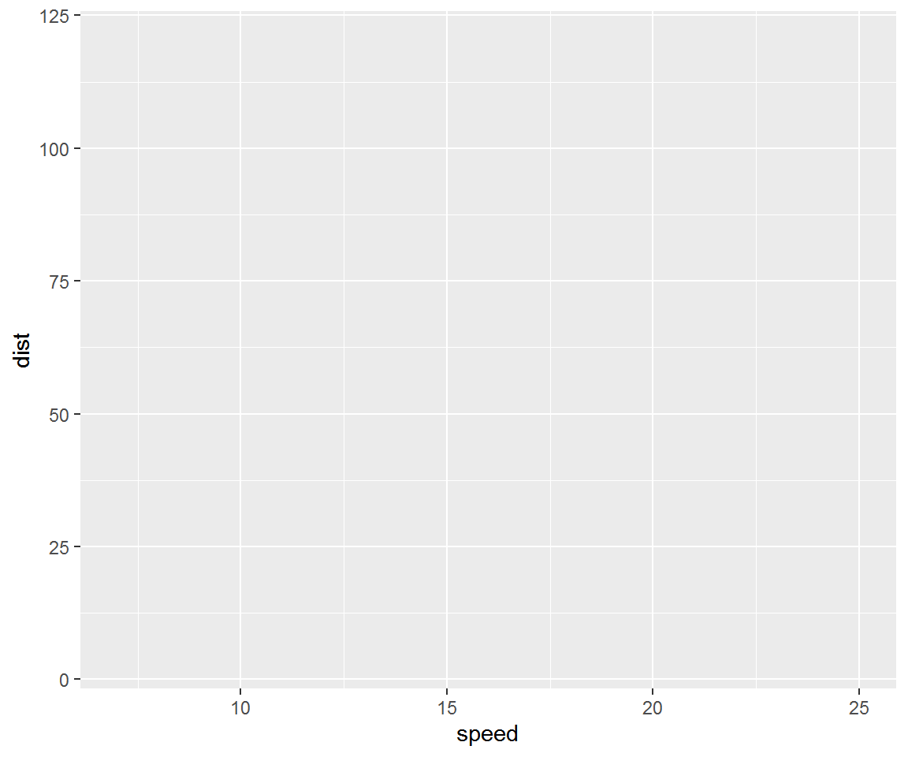]
| count: false |
| .panel1-my_cars-auto[ |
r cars %>% filter(speed > 4) %>% ggplot() + aes(x = speed) + aes(y = dist) + geom_point( #<< alpha = .8, #<< color = "blue" #<< ) #<<
] |
| .panel2-my_cars-auto[ 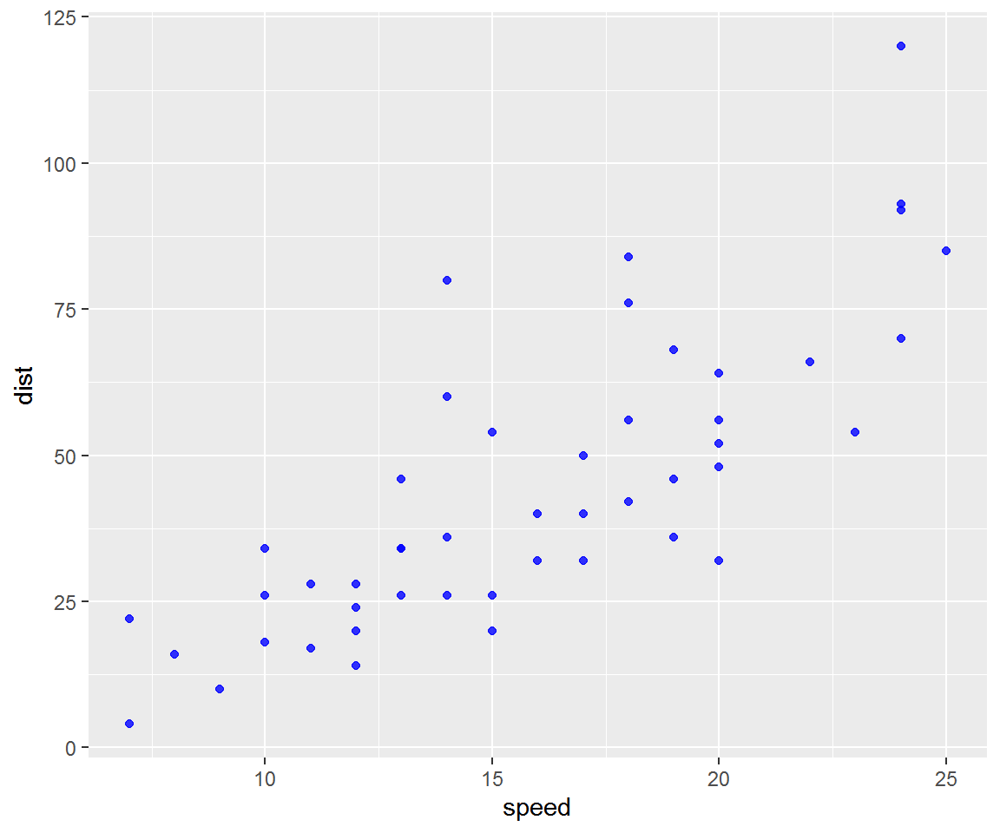] |
count: false
.panel1-my_cars-auto[
cars %>%
filter(speed > 4) %>%
ggplot() +
aes(x = speed) +
aes(y = dist) +
geom_point(
alpha = .8,
color = "blue"
) +
aes(size = speed) #<<]
.panel2-my_cars-auto[ 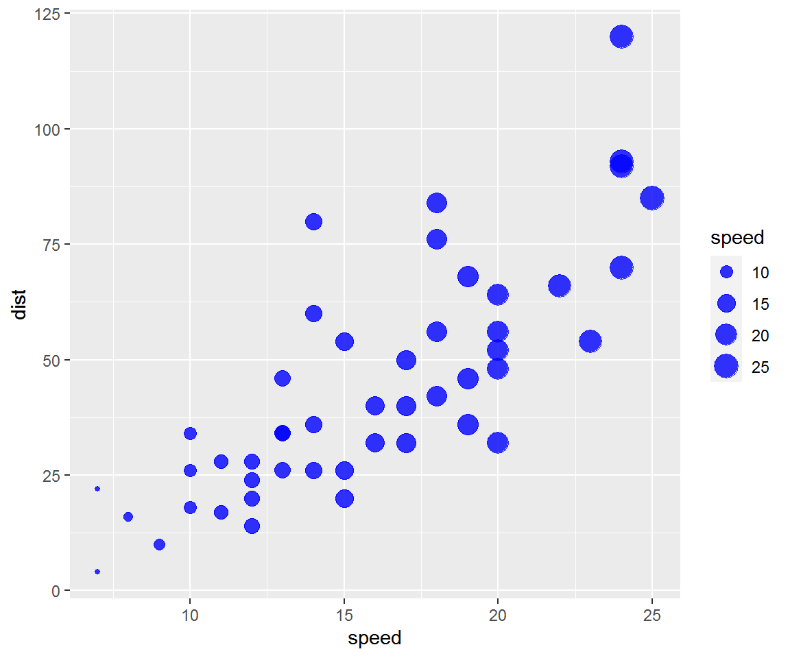]
| class: inverse, center, middle |
| # Next up: refer to same chunk, but use user defined breakpoints, and display output only |
count: false ### user defined break! using #BREAK message
| count: false ### user defined break! using #BREAK message |
count: false ### user defined break! using #BREAK message
| class: inverse, center, middle |
| # Next up: cycle through different lines of code |
count: false
cycle through lines of code marked #ROTATE
.panel1-my_fill-rotate[
ggplot(data = cars) +
aes(x = speed) +
aes(y = dist) +
geom_point(size = 8,
shape = 21,
alpha = .9,
color = "snow") +
aes(fill = speed) +
scale_fill_viridis_c(option = "magma") #<<]
.panel2-my_fill-rotate[ 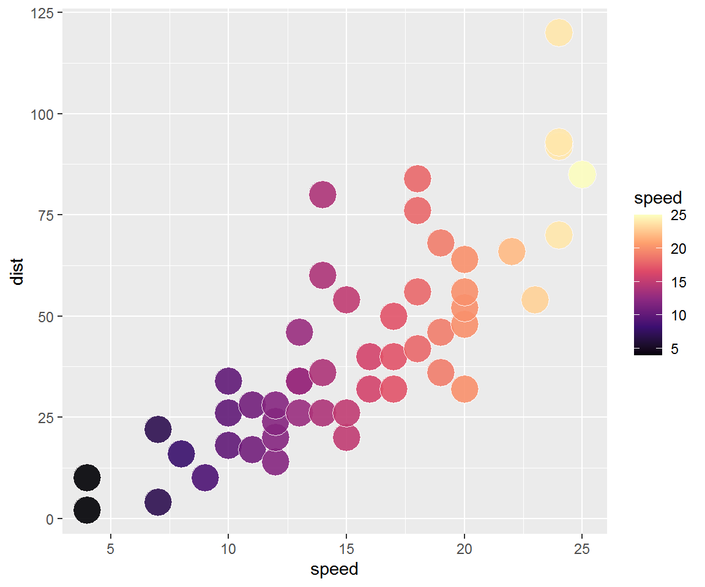]
| count: false |
| ### cycle through lines of code marked #ROTATE .panel1-my_fill-rotate[ |
r ggplot(data = cars) + aes(x = speed) + aes(y = dist) + geom_point(size = 8, shape = 21, alpha = .9, color = "snow") + aes(fill = speed) + scale_fill_viridis_c(option = "cividis") #<<
] |
| .panel2-my_fill-rotate[ 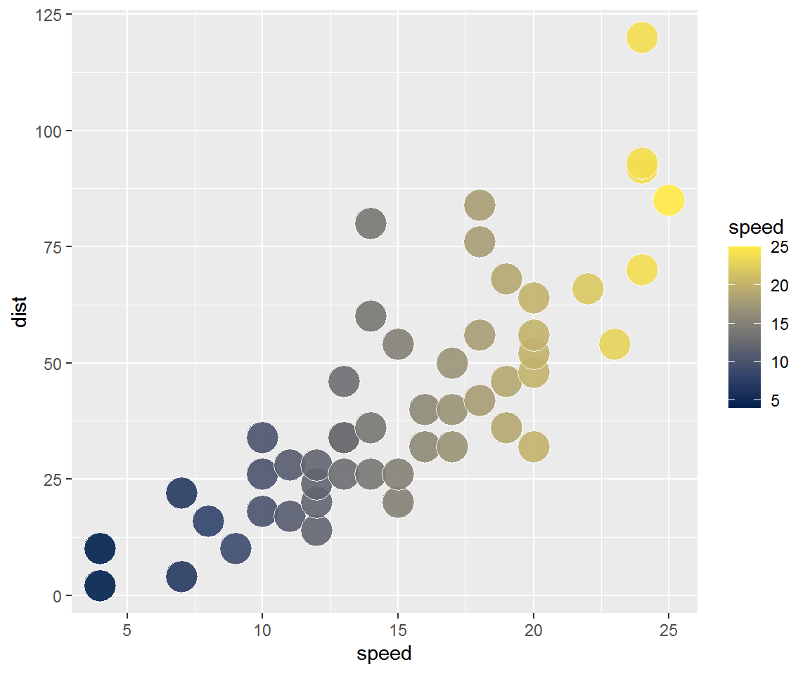] |
count: false
cycle through lines of code marked #ROTATE
.panel1-my_fill-rotate[
ggplot(data = cars) +
aes(x = speed) +
aes(y = dist) +
geom_point(size = 8,
shape = 21,
alpha = .9,
color = "snow") +
aes(fill = speed) +
scale_fill_viridis_c(option = "plasma") #<<]
.panel2-my_fill-rotate[ 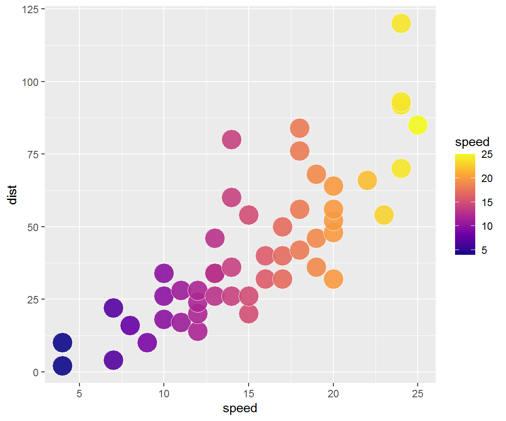]
| class: inverse, center, middle |
| # Next up: look at multiple realizations of same code |
count: false
see multiple realizations of code
.panel1-cars_multi-5[
cars %>%
sample_frac(size = 1, replace = TRUE) %>%
ggplot() +
aes(x = speed) +
aes(y = dist) +
geom_count(
alpha = .7,
color = "blue",
size = 4
) +
geom_smooth(method = lm, se = FALSE) +
coord_cartesian(xlim = range(cars$speed),
ylim = range(cars$dist)) +
theme(legend.position = c(.9, .2))]
.panel2-cars_multi-5[ 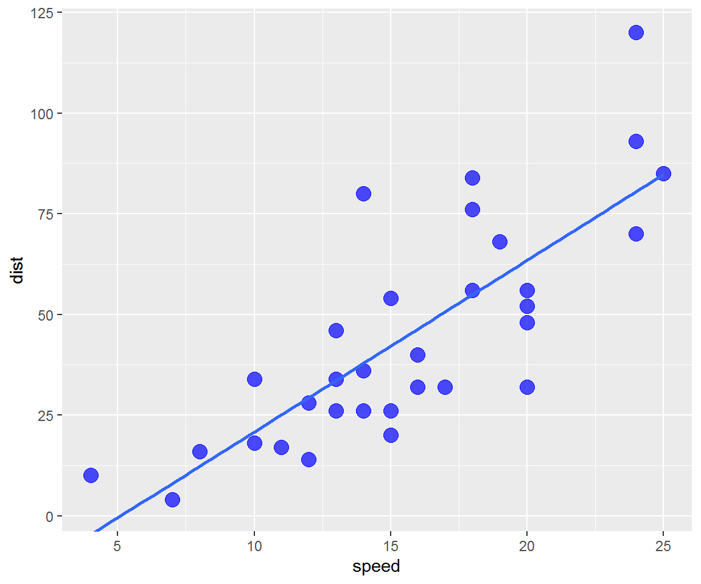]
| count: false |
| ### see multiple realizations of code .panel1-cars_multi-5[ |
r cars %>% sample_frac(size = 1, replace = TRUE) %>% ggplot() + aes(x = speed) + aes(y = dist) + geom_count( alpha = .7, color = "blue", size = 4 ) + geom_smooth(method = lm, se = FALSE) + coord_cartesian(xlim = range(cars$speed), ylim = range(cars$dist)) + theme(legend.position = c(.9, .2))
] |
| .panel2-cars_multi-5[ 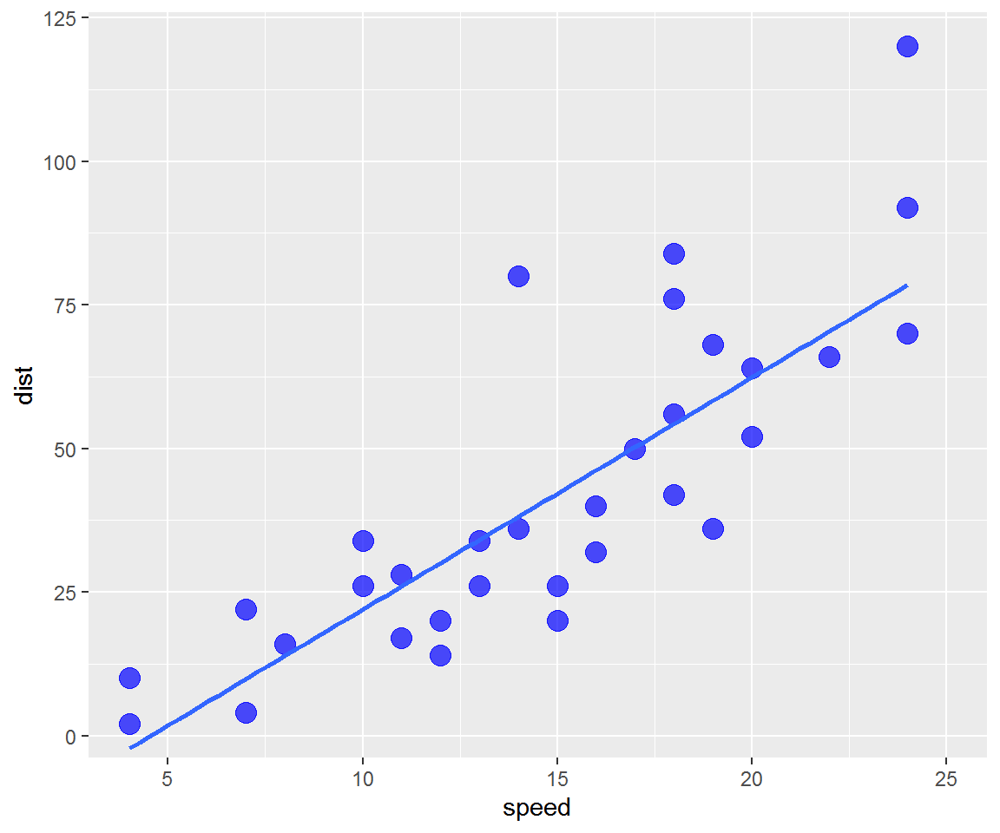] |
count: false
see multiple realizations of code
.panel1-cars_multi-5[
cars %>%
sample_frac(size = 1, replace = TRUE) %>%
ggplot() +
aes(x = speed) +
aes(y = dist) +
geom_count(
alpha = .7,
color = "blue",
size = 4
) +
geom_smooth(method = lm, se = FALSE) +
coord_cartesian(xlim = range(cars$speed),
ylim = range(cars$dist)) +
theme(legend.position = c(.9, .2))]
.panel2-cars_multi-5[ 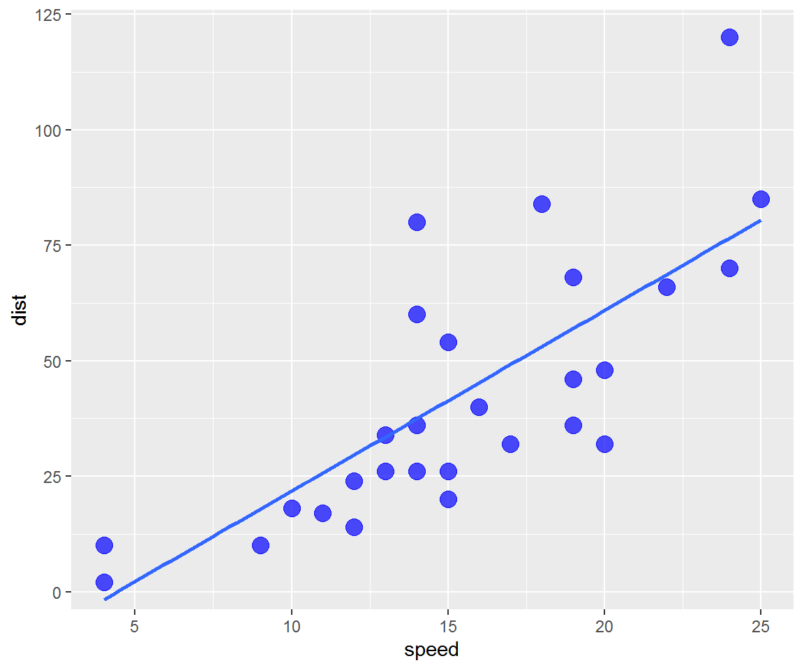]
| count: false |
| ### see multiple realizations of code .panel1-cars_multi-5[ |
r cars %>% sample_frac(size = 1, replace = TRUE) %>% ggplot() + aes(x = speed) + aes(y = dist) + geom_count( alpha = .7, color = "blue", size = 4 ) + geom_smooth(method = lm, se = FALSE) + coord_cartesian(xlim = range(cars$speed), ylim = range(cars$dist)) + theme(legend.position = c(.9, .2))
] |
| .panel2-cars_multi-5[ 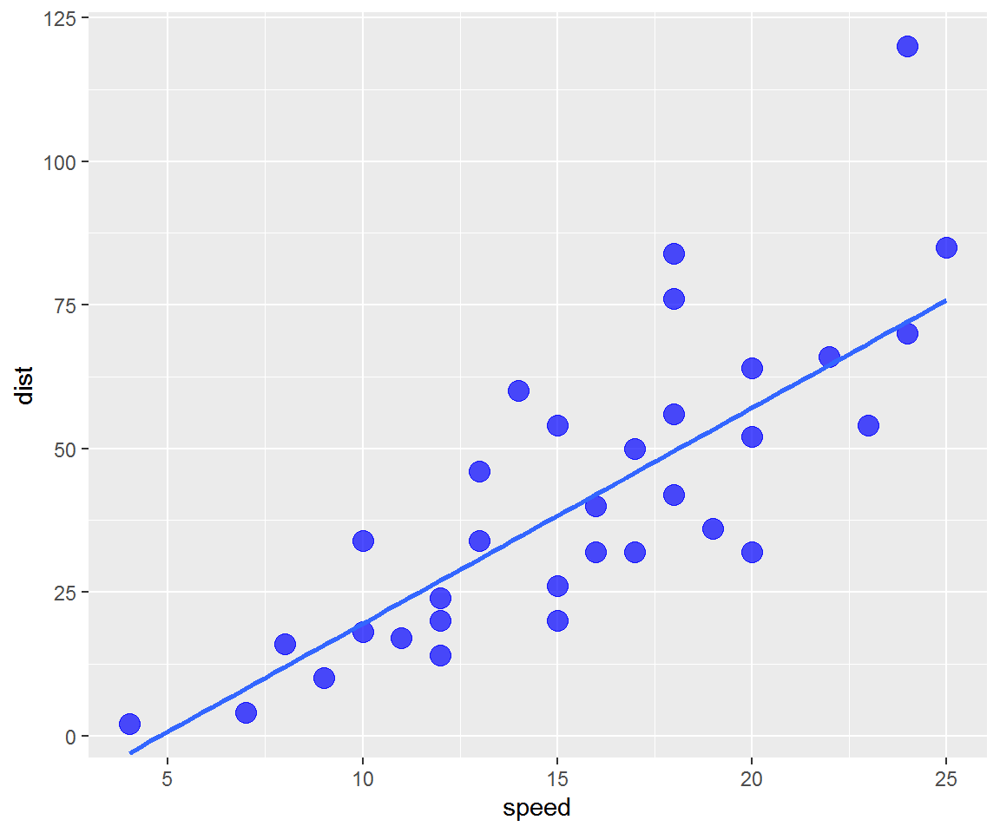] |
count: false
see multiple realizations of code
.panel1-cars_multi-5[
cars %>%
sample_frac(size = 1, replace = TRUE) %>%
ggplot() +
aes(x = speed) +
aes(y = dist) +
geom_count(
alpha = .7,
color = "blue",
size = 4
) +
geom_smooth(method = lm, se = FALSE) +
coord_cartesian(xlim = range(cars$speed),
ylim = range(cars$dist)) +
theme(legend.position = c(.9, .2))]
.panel2-cars_multi-5[
 ]
]